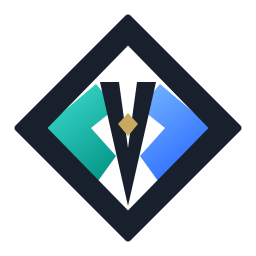
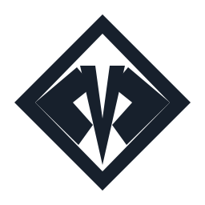
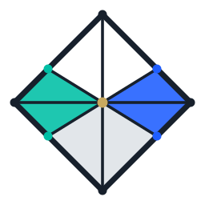
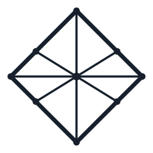

1. Strategic compression
只保留一个核心隐喻：钻石 + Merxi 的揭示动作 + 概率收束。不要把金融、Web3、预测、宝石全都堆进去。
Logo Optimization System
这次 Logo 优化的目标不是“画一个更漂亮的钻石”，而是把预测市场的核心压缩成一个可记忆、可缩放、可单色、可国际化的 MERXI 符号：钻石代表价值与清晰，Merxi 代表事件发生前的可读信号，中心 aperture 代表概率收束。
01 Agency Principles
一个现代 Logo 不能只看大图效果。它要能支撑 App icon、社媒头像、黑白印刷、线下物料、动效、产品 UI 和未来商标保护。以下是这次 Merxi Logo 的设计原则。
只保留一个核心隐喻：钻石 + Merxi 的揭示动作 + 概率收束。不要把金融、Web3、预测、宝石全都堆进去。
先看黑白轮廓，再看颜色。真正强的 Logo 在 16px、单色、反白、刺绣和 App icon 中仍然成立。
钻石不等于复杂切面。切面越多越像素材库图标。Merxi 需要少量但有意义的切面。
用 64 grid、中心轴、0.382 / 0.618 建立秩序，再做少量光学修正，避免机械感。
用户一眼记住的是“钻石中间打开的 V / 概率束”，不是普通宝石轮廓。
避免红绿涨跌、硬币、筹码、博彩符号和过度 crypto 霓虹。保留 fintech、研究、信号、透明度。
Logo 要能发展出 icon、loading、motion、badge、market category、deck cover 和线下导视。
最终注册前仍需法律检索，但设计阶段要避免常见宝石模板、交易 K 线和泛 Web3 标识。
02 Golden Ratio & Geometry
三套方案共用同一个几何骨架：256 viewBox，外钻石光学盒 220，中心点 128。外半径 110；黄金比例控制点为 110 × 0.618 ≈ 68 和 110 × 0.382 ≈ 42。
03 Image2 Exploration
Image2 帮助快速探索高级感、构造板和图标语义；但最终 Logo 用手工 SVG 几何重绘，避免 AI 图像的文字伪影、不可编辑和边界不精确问题。


mono| Geometry | Value |
|---|---|
| Outer diamond | 18 / 238 optical box, 220 diagonal, 7 unit final edge. |
| Inner aperture | White inner diamond starts at 42 and lands at 214, preserving a strong border. |
| Central V | V apex reaches y=206 for forecast convergence; shoulders narrowed after small-size test. |
| Criteria | Score | Read |
|---|---|---|
| Brand safety | 9.2 | |
| Distinctiveness | 8.1 | |
| Small-size clarity | 8.6 |
| Geometry | Value |
|---|---|
| Outer diamond | 220 diagonal, 14 unit outline, slightly heavier for premium app-icon clarity. |
| Aperture width | Built around the 0.382 aperture idea, optically narrowed so the center does not collapse at 18px. |
| Lower point | Beam lands at y=218, close to lower diamond point, creating forecast convergence. |
| Criteria | Score | Read |
|---|---|---|
| Modernity | 9.4 | |
| Distinctiveness | 9.1 | |
| Small-size clarity | 8.8 |


mono| Geometry | Value |
|---|---|
| Outer diamond | 220 diagonal; 7 unit edge so the lattice does not become too heavy. |
| Node system | Side nodes at center ±68 and vertical ±42, matching 0.618 / 0.382 controls. |
| Line system | Outer 7, inner 3.6, nodes 5.5 / center 6.5 for optical hierarchy. |
| Criteria | Score | Read |
|---|---|---|
| Semantic fit | 9.5 | |
| Simplicity | 7.4 | |
| System potential | 8.8 |
07 Final Decision
A 最稳，C 语义最强，但 B 在现代感、简洁度、独特性和可注册潜力之间最平衡。它不像普通钻石，也不会像博彩或 crypto 素材。
| Rank | Scheme | Decision |
|---|---|---|
| 01 | Aperture V | 推荐作为 master mark、App icon、社媒头像和官网主标。 |
| 02 | Signal Prism | 适合作为更商业安全的备选，或用于需要更强颜色识别的场景。 |
| 03 | Oracle Lattice | 适合 research、oracle、data intelligence、developer docs 等产品线。 |
08 Deliverables
三套 SVG 已放入项目 assets 文件夹。Image2 探索图也已保存，便于做演示、内部评审或继续衍生 3D / motion 版本。
assets/merxi-logo-option-a-signal-prism.svg
assets/merxi-logo-option-b-aperture-v.svg
assets/merxi-logo-option-c-oracle-lattice.svg
assets/merxi-logo-option-a-signal-prism-mono.svg
assets/merxi-logo-option-b-aperture-v-mono.svg
assets/merxi-logo-option-c-oracle-lattice-mono.svg